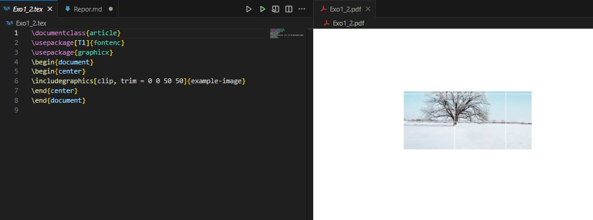
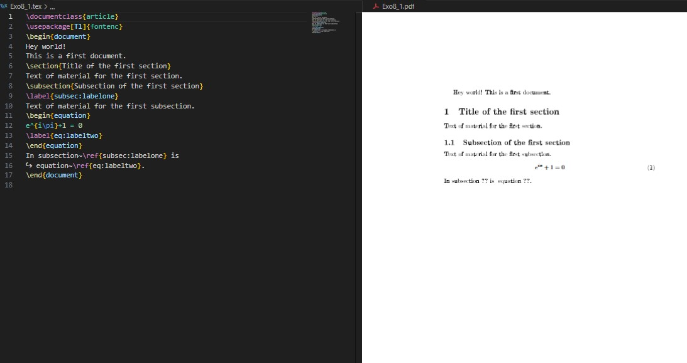
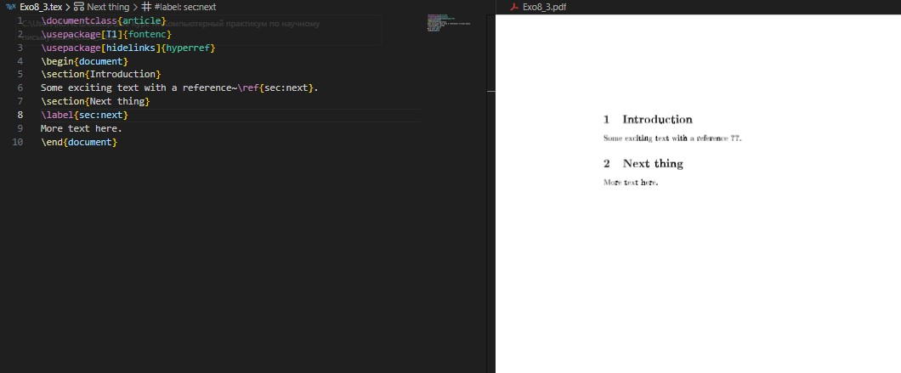
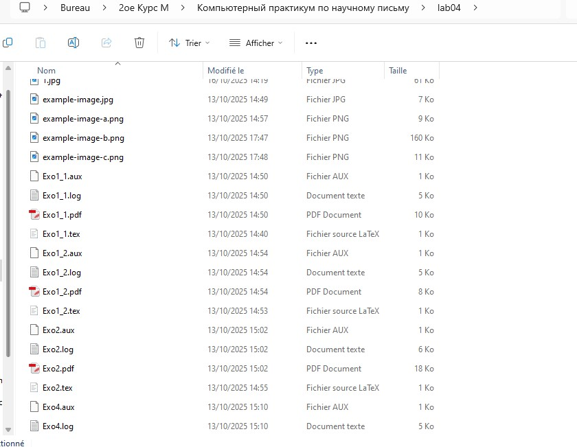
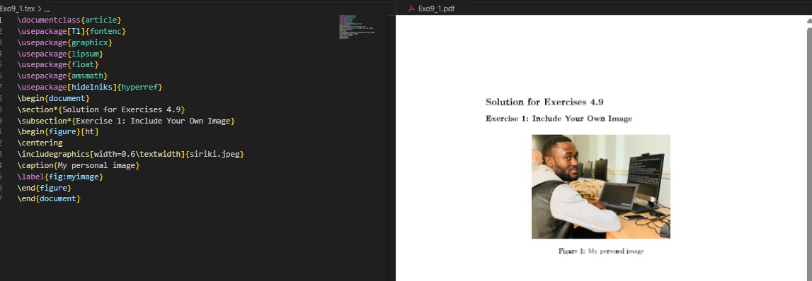
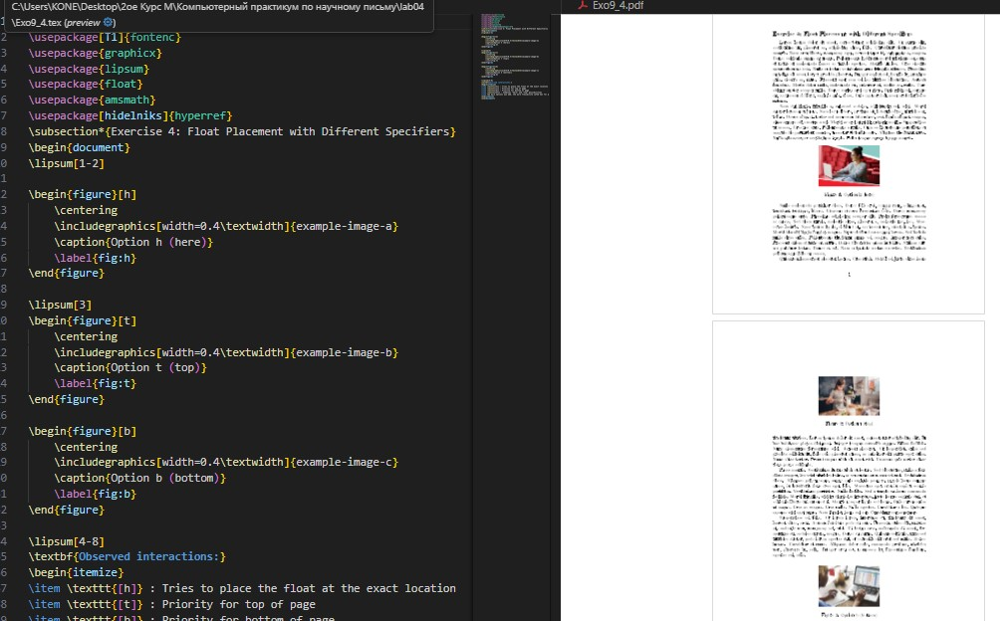
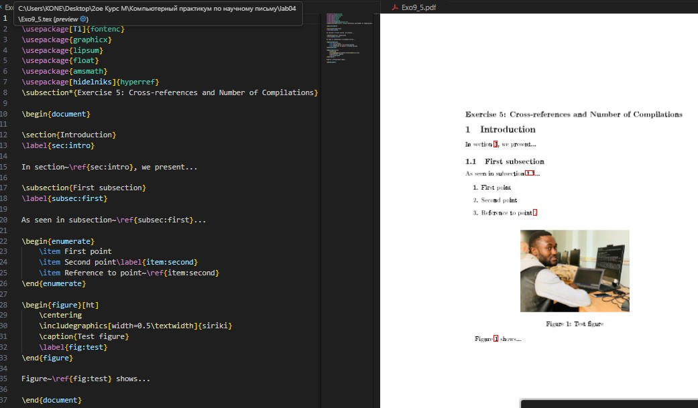

{ #fig:001 width=100% }
{ #fig:001 width=100% }Целью данной лабораторной работы является ознакомление с основами включения графики в документы LaTeX.
The purpose of this lab work is to learn how to include and manipulate graphics in LaTeX documents using the graphicx package and related tools.
Для включения внешних изображений в LaTeX используется пакет graphicx, который предоставляет команду \includegraphics.
To include external images in LaTeX, use the graphicx package which provides the \includegraphics command.
\documentclass{article}
\usepackage[T1]{fontenc}
\usepackage{graphicx}
\begin{document}
This picture
\begin{center}
\includegraphics[height=2cm]{example-image}
\end{center}
is an imported PDF.
\end{document}
Команда \includegraphics имеет множество опций для управления размером и формой изображений.
The \includegraphics command has many options to control image size and appearance.
\documentclass{article}
\usepackage[T1]{fontenc}
\usepackage{graphicx}
\begin{document}
\begin{center}
\includegraphics[height=0.5\textheight]{example-image}
\end{center}
Некоторый текст
\begin{center}
\includegraphics[width=0.5\textwidth]{example-image}
\end{center}
\end{document}
{ #fig:001 width=100% }
\documentclass{article}
\usepackage[T1]{fontenc}
\usepackage{graphicx}
\begin{document}
\begin{center}
\includegraphics[clip, trim=0 0 50 50]{example-image}
\end{center}
\end{document}

{ #fig:002 width=100% }Изображения обычно включаются как плавающие объекты (floats) чтобы избежать больших пробелов на странице. Images are typically included as floats to avoid large gaps on the page.
\documentclass{article}
\usepackage[T1]{fontenc}
\usepackage{graphicx}
\usepackage{lipsum} % produce dummy text as filler
\begin{document}
\lipsum[1-4] % Just a few filler paragraphs
Test location.
\begin{figure}[ht]
\centering
\includegraphics[width=0.5\textwidth]{example-image-a.png}
\caption{An example image}
\end{figure}
\lipsum[6-10] % Just a few filler paragraphs
\end{document}
 { #fig:003 width=100% }
{ #fig:003 width=100% }
Рекомендуется использовать простые имена файлов без пробелов и специальных символов. It's recommended to use simple file names without spaces or special characters.
\includegraphics[width=30pt]{pics/myimage.png}
Для организации файлов изображения можно хранить в поддиректориях. To organize files, images can be stored in subdirectories.
\graphicspath{{figs/}{pics/}}
LaTeX поддерживает различные форматы изображений. Предпочтительно использовать PDF для векторной графики. LaTeX supports various image formats. PDF is preferred for vector graphics.
% создания графики с TikZ
\documentclass{article}
\usepackage{tikz}
\begin{document}
\begin{tikzpicture}
\draw (0,0) circle (1cm);
\draw (-1,0) -- (1,0);
\end{tikzpicture}
\end{document}
Пакет float предоставляет опцию H для точного размещения плавающих объектов.
The float package provides the H option for precise float placement.
\documentclass{article}
\usepackage[T1]{fontenc}
\usepackage{graphicx}
\usepackage{lipsum}
\usepackage{float}
\begin{document}
\lipsum[1-7]
\begin{figure}[H]
\centering
\includegraphics[width=0.5\textwidth]{example-image}
\caption{Пример изображения}
\end{figure}
\lipsum[8-15]
\end{document}
 { #fig:004 width=100% }
{ #fig:004 width=100% }
Пакет trivfloat позволяет создавать новые типы плавающих сред.
The trivfloat package allows creating new types of float environments.
\documentclass{article}
\usepackage[T1]{fontenc}
\usepackage{graphicx}
\usepackage{lipsum} % dummy text for filler
\usepackage{trivfloat}
\trivfloat{image}
\begin{document}
\begin{image}
\centering
\includegraphics[width=0.5\textwidth]{example-image}
\caption{An example image}
\end{image}
\end{document}
 { #fig:005 width=100% }
{ #fig:005 width=100% }
Механизм \label и \ref позволяет создавать ссылки на пронумерованные элементы.
The \label and \ref mechanism allows creating references to numbered elements.
\documentclass{article}
\usepackage[T1]{fontenc}
\begin{document}
Hey world!
This is a first document.
\section{Title of the first section}
Text of material for the first section.
\subsection{Subsection of the first section}
\label{subsec:labelone}
Text of material for the first subsection.
\begin{equation}
e^{i\pi}+1 = 0
\label{eq:labeltwo}
\end{equation}
In subsection~\ref{subsec:labelone} is
equation~\ref{eq:labeltwo}.
\end{document}

{ #fig:006 width=50% }
{ #fig:007 width=50% }\documentclass{article}
\usepackage[T1]{fontenc}
\usepackage[hidelinks]{hyperref}
\begin{document}
\section{Introduction}
Some exciting text with a reference~\ref{sec:next}.
\section{Next thing}
\label{sec:next}
More text here.
\end{document}

{ #fig:008 width=100% }\documentclass{article}
\usepackage{graphicx}
\begin{document}
\begin{figure}[ht]
\centering
\includegraphics[width=0.6\textwidth]{my-image.png}
\caption{Моё собственное изображение}
\label{fig:myimage}
\end{document}

{ #fig:009 width=100% }\documentclass{article}
\usepackage{graphicx}
\begin{document}
\includegraphics[height=3cm]{example-image}
\includegraphics[width=0.3\textwidth]{example-image}
\includegraphics[scale=0.5]{example-image}
\includegraphics[angle=45, width=0.2\textwidth]{example-image}
\end{document}
 { #fig:010 width=100% }
{ #fig:010 width=100% }
\documentclass[twocolumn]{article}
\usepackage{graphicx}
\usepackage{lipsum}
\begin{document}
\lipsum[1]
\begin{figure}[ht]
\centering
\includegraphics[width=0.8\textwidth]{example-image}
\caption{С использованием \textbackslash textwidth}
\end{figure}
\begin{figure}[ht]
\centering
\includegraphics[width=0.8\linewidth]{example-image}
\caption{С использованием \textbackslash linewidth}
\end{figure}
\lipsum[2-5]
\end{document}
 { #fig:011 width=100% }
{ #fig:011 width=100% }
\documentclass{article}
\usepackage{graphicx}
\usepackage{lipsum}
\begin{document}
\lipsum[1-2]
\begin{figure}[h]
\centering
\includegraphics[width=0.4\textwidth]{example-image-a}
\caption{Опция h (здесь)}
\end{figure}
\lipsum[3]
\begin{figure}[t]
\centering
\includegraphics[width=0.4\textwidth]{example-image-b}
\caption{Опция t (верх)}
\end{figure}
\begin{figure}[b]
\centering
\includegraphics[width=0.4\textwidth]{example-image-c}
\caption{Опция b (низ)}
\end{figure}
\lipsum[4-8]
\end{document}

{ #fig:012 width=100% }\documentclass{article}
\usepackage{graphicx}
\begin{document}
\section{Введение}
\label{sec:intro}
В разделе~\ref{sec:intro} мы представляем...
\subsection{Первая подсекция}
\label{subsec:first}
Как видно в подсекции~\ref{subsec:first}...
\begin{figure}[ht]
\centering
\includegraphics[width=0.5\textwidth]{example-image}
\caption{Тестовая фигура}
\label{fig:test}
\end{figure}
Рисунок~\ref{fig:test} показывает...
\end{document}

{ #fig:013 width=100% }\documentclass{article}
\usepackage{graphicx}
\begin{document}
\begin{figure}[ht]
\centering
\includegraphics[width=0.4\textwidth]{example-image-a}
\label{fig:before}
\caption{Рисунок с label до caption}
\end{figure}
\begin{figure}[ht]
\centering
\includegraphics[width=0.4\textwidth]{example-image-b}
\caption{Рисунок с label после caption}
\label{fig:after}
\end{figure}
Ссылка на рисунок~\ref{fig:before} (неправильная)\\
Ссылка на рисунок~\ref{fig:after} (правильная)
\end{document}
 { #fig:014 width=100% }
{ #fig:014 width=100% }
\documentclass{article}
\usepackage{amsmath}
\begin{document}
\begin{equation}
E = mc^2
\end{equation}
\label{eq:after}
\begin{equation}
F = ma
\label{eq:inside}
\end{equation}
Ссылка на уравнение~\ref{eq:after} (неправильная)\\
Ссылка на уравнение~\ref{eq:inside} (правильная)
\end{document}
 { #fig:015 width=100% }
{ #fig:015 width=100% }
В ходе лабораторной работы №4 я изучил основы включения и управления графикой в документах LaTeX. Освоил работу с пакетом graphicx, научился создавать плавающие объекты, управлять их размещением и создавать перекрёстные ссылки на изображения. Также изучил лучшие практики организации графических файлов и их именования.
In this lab work #4, I learned the fundamentals of including and manipulating graphics in LaTeX documents. I mastered the graphicx package, learned to create float objects, control their placement, and create cross-references to images. I also studied best practices for organizing graphic files and naming them.
LaTeX/Математические формулы — Викиучебник. https://ru.wikibooks.org/wiki/LaTeX/